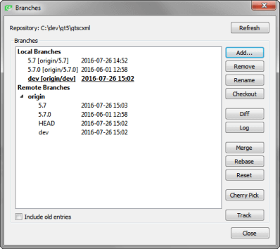
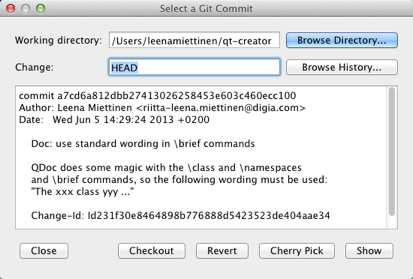
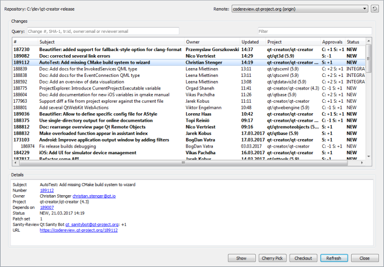
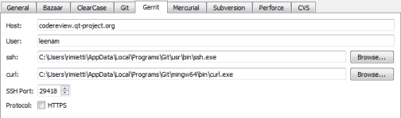

Using Git
Git is a fast decentralized version control system. Git is available for Windows, Linux, and macOS.
You can use the Gerrit code review tool for projects that use Git.
Using Git for Windows
If you configure Git for use with git bash, only, and use SSH authorization, Git looks for the SSH keys in the directory where the HOME environment points to. The variable is always set by git bash.
However, the variable is typically not set in a Windows command prompt. When you run Git from a Windows command prompt, it looks for the SSH keys in its installation directory, and therefore, the authorization fails.
You can set the HOME environment variable from Qt Creator. Select Tools > Options > Version Control > Git, and then select the Set "HOME" environment variable check box. HOME is set to %HOMEDRIVE%%HOMEPATH% when the Git executable is run and authorization works as it would with git bash.
Reverting Changes Using Git
The Git version control system has an index that is used to stage changes. The index is committed on the next commit. Git allows you to revert back to the state of the last commit as well as to the state staged in the index.
- Git > Current File > Undo Unstaged Changes reverts all changes and resets the current file to the state of the index.
- Git > Current File > Undo Uncommitted Changes reverts all changes, discarding the index. This returns the current file to the state it was in right after the last commit.
- Git > Local Repository > Reset opens a dialog where you can select the SHA-1 to reset the working directory to. This is useful after applying patches for review, for example. You can choose between a Soft reset that does not touch the index file nor the working tree at all, a Hard reset that discards all changes to tracked files in working tree, and a Mixed reset that resets HEAD and the index (nothing remains staged) without touching the working directory.
Working with the Current File
In addition to the standard version control system functions, you can select Tools > Git > Current File > Stage File for Commit to mark a new or modified file for committing to the repository.
To undo this function, select Unstage File from Commit.
Working with the Current Project
In addition to the standard version control system functions, you can select Tools > Git > Current Project > Clean Project to clean the working directory. All files that are not under version control are displayed in the Clean Repository dialog. Ignored files are deselected by default. Select the files to delete and click Delete.
Working with Local Repositories
In addition to the standard version control system functions, you can select Tools > Git > Local Repository > Clean to clean the repository.
To apply latest changes to the last commit, select Tools > Git > Local Repository > Amend Last Commit. You can also edit the commit message.
To amend an earlier comment in a series of related commits, select Tools > Git > Local Repository > Fixup Previous Commit. This operation is done using interactive rebase. In case of conflicts, a merge tool is suggested.
To change a series of commits in the local repository, select Tools > Git > Local Repository > Interactive Rebase. You can reorder or discard commits, squash them into a single commit, or edit the commit messages.
The following sections describe how to manage local and remote branches, apply patches, and use stashes.
Working with Branches
To work with Git branches, select Tools > Git > Local Repository > Branches. The checked out branch is shown in bold and underlined in the list of branches. Double-click branch names to edit them.

The following operations are supported:
| Menu Item | Description |
|---|---|
| Refresh | Refresh the list of branches. |
| Add | Create new tracking and non-tracking branches. |
| Remove | Remove a local branch. You cannot delete remote branches. |
| Rename | Rename a local branch. |
| Checkout | Check out the selected branch and make it current. You can stash changes you have made to tracked files. |
| Diff | Show the differences between the selected and the current branch. |
| Log | Show the changes in a branch. |
| Merge | Join the development histories in two branches together. If the commit you are merging can be reached by following the first commit's history, there is no divergent work to merge together. To allow Git to move the branch pointer forward, select Fast-Forward. If you do not want to fast-forward the branch, select No Fast-Forward. |
| Rebase | Copy local commits to the updated upstream head. |
| Reset | Hard reset the active branch to the selected branch. |
| Cherry Pick | Cherry pick the top commit from the selected branch. |
| Track | Set the current branch to track the selected one. |
Applying Patches
Patches are rewriting instructions that can be applied to a set of files. To apply a patch file that is open in Qt Creator, select Tools > Git > Local Repository > Patch > Apply from Editor.
To select the patch file to apply from the file system, select Apply from File.
Using Stashes
With Git, you can put your current set of changes onto a virtual shelf called a stash. Stashes are useful, for example, to put aside a set of changes to work on higher priority tasks or to pull in new chages from another repository.
To stash all local changes, select Tools > Git > Local Repository > Stash > Stash. The working copy is reset to the state it had after the last commit. To save the current state of your unstaged files and reset the repository to its staged state, select Stash Unstaged Files.
To display a dialog that shows all known stashes with options to restore, display or delete them, select Stashes.
To save a snapshot of your current work under a name for later reference, select Take Snapshot. The working copy is unchanged. For example, if you want to try something and find out later that it does not work, you can discard the changes and return to the state of the snapshot.
To remove a single stashed state from the stash list and apply it on top of the current working tree state, select Stash Pop.
Applying Actions to Commits
To browse a directory or the commit history and to apply actions on the commits, select Tools > Git > Actions on Commits. You can checkout, revert, or cherry-pick commits or view them in the diff editor.

Working with Remote Repositories
In addition to the standard version control system functions, you can select Tools > Git > Remote Repository > Pull topull changes from the remote repository. If there are locally modified files, you are prompted to stash the changes. Select Tools > Options > Version Control > Git and then select the Pull with rebase check box to perform a rebase operation while pulling.
Managing Remote Repositories
To manage remote repositories available in Git, select Tools > Git > Remote Repository > Manage Remotes. Double-click the names and URLs of the remote repositories to edit them.
The following operations are supported:
| Menu Item | Description |
|---|---|
| Refresh | Refresh the list of remote repositories. |
| Add | Add a new remote repository. |
| Fetch | Fetch all the branches and change information from a remote repository. |
| Push | Push committed changes to the remote repository. |
| Remove | Remove a remote repository. |
Using Git with Subversion
You can use Git as a client for a Subversion server. To fetch changes from a Subversion repository to a Git repository, select Tools > Git > Remote Repository > Subversion > Fetch.
To view the Git Subversion log, select Log.
Reviewing Code with Gerrit
If your Git project uses Gerrit for code reviews, you can view your changes in Qt Creator.
To push committed changes to Gerrit, select Tools > Git > Remote Repository > Push to Gerrit.
To view the same information about each change as in the Gerrit web interface, select Tools > Git > Remote Repository > Gerrit.

To view details of the selected change, select Show.
To cherry-pick the selected change to the local repository, select Cherry Pick. To remove the change after testing it, select Tools > Git > Local Repository > Reset. In the Undo Changes to dialog, select the state to reset the working directory to, and then select OK.
To check out the change in a headless state, select Checkout.
To refresh the list of changes, select Refresh.
The Remote field lists the remotes of the current repository that are detected as Gerrit servers. Select Tools > Options > Version Control > Gerrit to specify a fallback connection to a Gerrit server over SSH. The Gerrit REST interface and the curl tool are used for HTTP connections.
Select the HTTPS check box to prepend https to the Gerrit URL if Gerrit does not provide it.

Working with Git Tools
To start a graphical interface to Git, select Tools > Git > Git Tools > Git Gui.
Note: On macOS, the default Git installation does not contain Git Gui. To use Git Gui, install it separately. To start Git Gui from Qt Creator, select Preferences > Version Control > Git, and set the path to the environment that contains Git Gui in the Prepend to PATH field.
To start the commit viewer for Git, select Tools > Git > Git Tools > Gitk. You can also start the tool to view commits in the current document or in the folder that contains the current document. To specify arguments for running Gitk, select Tools > Options > Version Control > Git.
To use some other application for viewing Git history, such as GitX or QGit viewer, select Tools > Options > Version Control > Git and specify the path to the application executable in the Command field. To start the application, select Tools > Git > Git Tools > Repository Browser.
To resolve merge conflicts, select Tools > Git > Git Tools > Merge Tool.